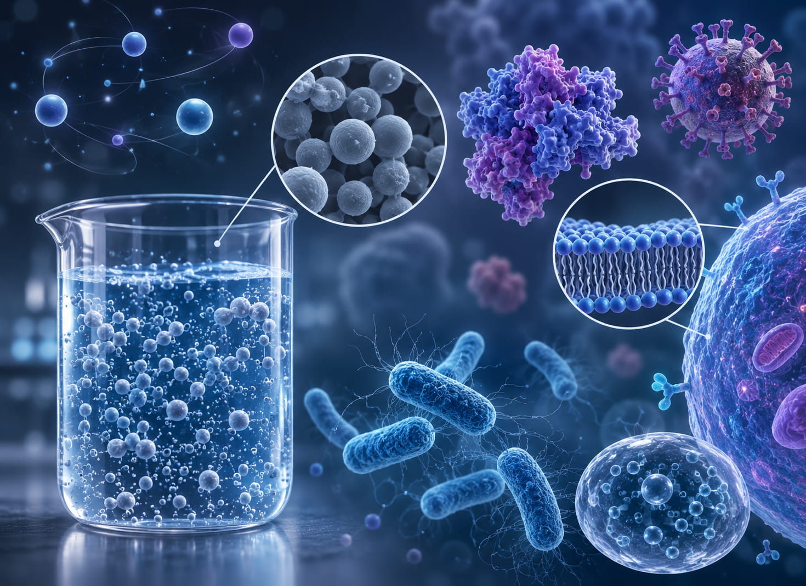
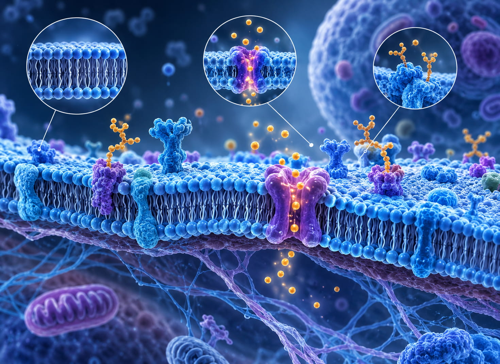
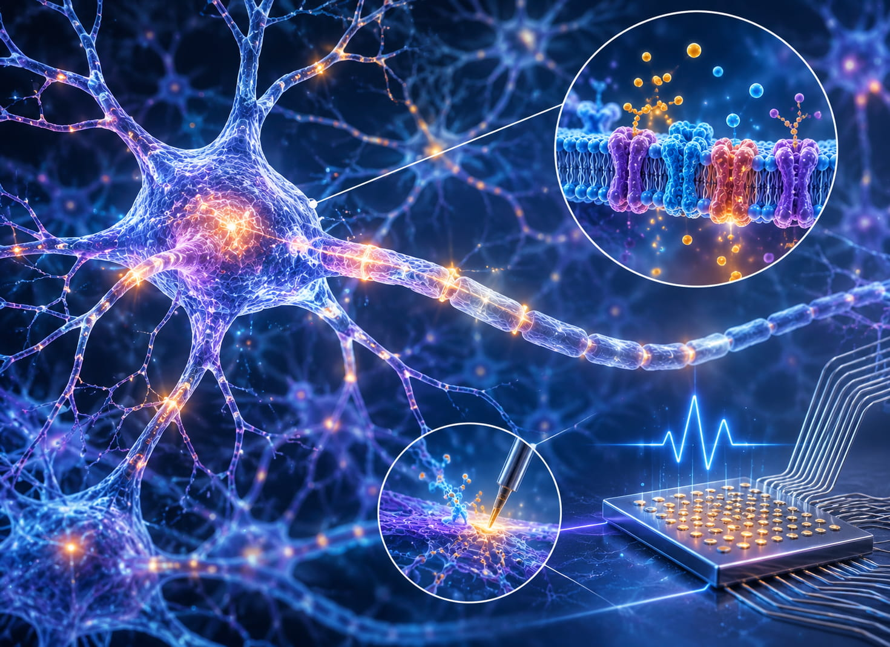
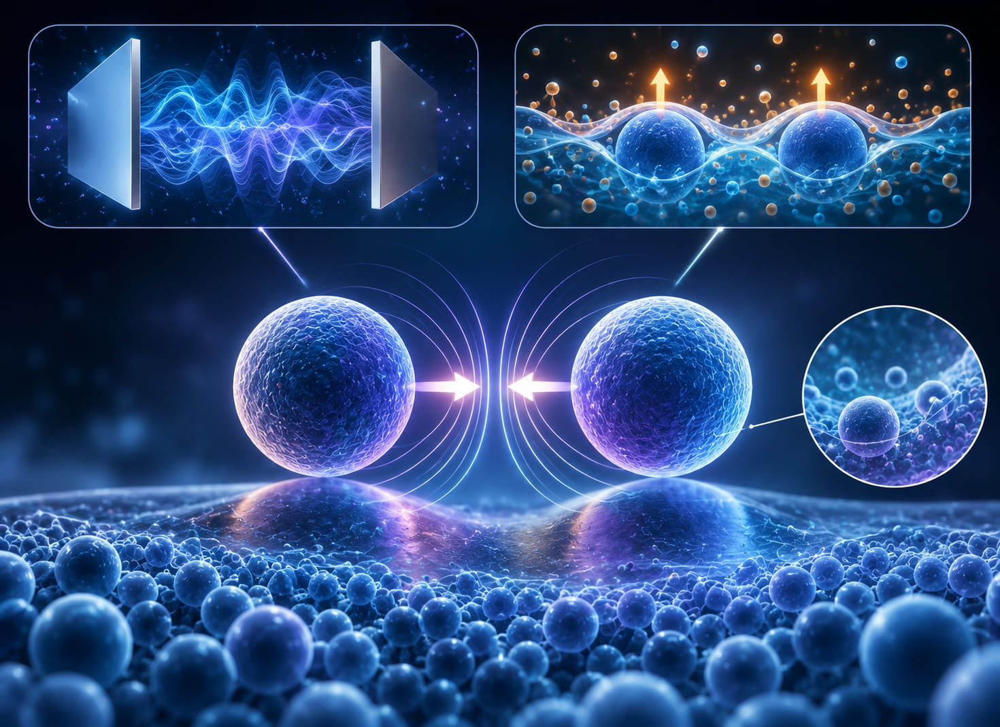

زمینههای پژوهشی
ماده نرم، زیستفیزیک و برهمکنشهای ناشی از نوسانات — از کلوئیدها و غشای سلولی تا نورونها و نیروی کازیمیر.
پروژههای پژوهشی برای دانشجویان
در حال حاضر دانشجو برای پروژههای پژوهشی میپذیرم. این پروژهها برای دانشجویان کارشناسی و تحصیلات تکمیلی باز است.
پژوهشهای کنونی من شامل برهمکنشهای کازیمیر، کلوئیدهای چندپراکنده و مدلسازی رابطهای عصبی است.

فیزیک کلوئیدها و بیوکلوئیدها
پژوهش من، در گستردهترین معنا، بر فیزیک بنیادین برهمکنشهای کلوئیدی متمرکز است. کلوئیدها سیستمهایی هستند که در آنها ذرات کوچکی با ابعاد نانومتر تا میکرومتر در یک محیط پیرامونی — مایع، گاز یا جامد — پراکنده شدهاند. شیر، جوهر، آئروسلها و مایعات زیستی نمونههای آشنای کلوئیدند. کلوئیدها از این جهت اهمیت ویژه دارند که بهاندازهای بزرگاند که از طریق نیروهای فیزیکی با یکدیگر برهمکنش کنند و در عین حال بهقدری کوچکاند که نوسانات گرمایی بر آنها اثر شدید میگذارد. همین ویژگی، کلوئیدها را سیستمی مناسب برای مطالعه برهمکنشهای بنیادین و رفتار جمعی در ماده نرم میسازد.
بیوکلوئیدها سیستمهای کلوئیدی با منشأ زیستیاند، مانند پروتئینها، ویروسها، باکتریها، دولایههای لیپیدی و اجزای سلولی. برهمکنش میان بیوکلوئیدها بسیاری از فرایندهای زیستی بنیادین، بهویژه خودآرایی، تشخیص مولکولی و سازمانیابی ساختاری سلولها را پیش میبرد. مطالعه این برهمکنشها دانش ما از فیزیک ماده نرم را گسترش میدهد و در عین حال فیزیک را به کارکرد زیستی پیوند میدهد و به شکلگیری دانشی میانرشتهای میان فیزیک و زیستفیزیک کمک میکند.

فیزیک غشای سلولی
سلولهای زیستی را غشاهای لیپیدی احاطه کردهاند که هم بهعنوان سدی گزینشگر عمل میکنند و هم بستری پویا برای بسیاری از فرایندهای زیستی فراهم میآورند. غشاهای زیستی شامل انواع اجزای درونغشایی (پروتئینها، کانالها و درشتمولکولهای دیگر) هستند که بخشی از دولایه لیپیدیاند و برهمکنش میان این اجزا در فرایندهایی مانند سیگنالدهی، انتقال و سازماندهی ساختار، از طریق خود غشا میانجیگری میشود. در فیزیک نظری، مطالعه اینگونه سیستمها دیدی عمیقتر به ما میدهد که نیروهای میکروسکوپی چگونه با هم رفتار جمعی غشاهای زیستی و عملکرد دقیق سلولهای زنده را پدید میآورند.

فیزیک نورونها و رابطهای عصبی
نورونها سلولهایی هستند که سیگنال الکتریکی را در سراسر سیستم عصبی منتقل میکنند. غشای نورونها ریزمحیطی پیچیده دارد که شامل مجموعهای از کانالهای یونی، گیرندهها و پروتئینهاست که انتشار سیگنال و ارتباط را کنترل میکنند. ارتباط میان این اجزا برای سیگنالدهی قابلاعتماد و پایداری شبکههای عصبی نیز حیاتی است.
از منظر فیزیک، این سیستمها نشان میدهند که نیروها و نوسانات میکروسکوپی چگونه کارکرد زیستی را در سطح سلولی شکل میدهند. افزون بر این، درک این اصول در زمینه رابطهای عصبی — جایی که ابزارهای مصنوعی مانند الکترودها یا تراشههای زیستسازگار برای برقراری ارتباط با نورونها طراحی میشوند — ضروری است. پیشرفت در این حوزه به شناخت عمیق از چگونگی تأثیر برهمکنشهای فیزیکی بر پیوند میان بافت زنده و سیستمهای مهندسیشده وابسته است.

برهمکنشهای کازیمیر: نیرویی از هیچ!
برهمکنشهای کازیمیر پدیدهای شگفتانگیزند که در آن دو جسم خنثی و بدون بار، بهدلیل نوسانات میدان الکترومغناطیسی در فضای خالی، نیرویی را تجربه میکنند. حتی بدون هیچ میدان کلاسیک یا تماس مستقیم، این نوسانات کوانتومی پیوسته نیروهایی قابلاندازهگیری میان اجسام پدید میآورند. در دمای متناهی، نوسانات گرمایی — برای مثال نوسانات سطوح مشترک شارهها — نیز میتوانند در سیستمهای ماده نرم به برهمکنشهایی مشابه کازیمیر بینجامند که اغلب «نیروهای ناشی از نوسانات گرمایی» نامیده میشوند. به بیان دیگر، هم نوسانات کوانتومی و هم گرمایی — دو منبع بهظاهر «نامرئی» — میتوانند اثرهایی واقعی و قابلاندازهگیری ایجاد کنند.
در پژوهشهای خود بررسی میکنم که برهمکنشهای کازیمیر میان ذرات کلوئیدی در سطوح مشترک نرم چگونه پدید میآیند. هندسه، خواص مواد و محیط گرمایی همگی بر اندازه و ماهیت این نیروها اثر شدید دارند. درک این برهمکنشها به شناخت فیزیک ماده نرم کمک میکند و ممکن است در فناوری نانو، طراحی مواد و سیستمهای زیستی نیز کاربرد داشته باشد.